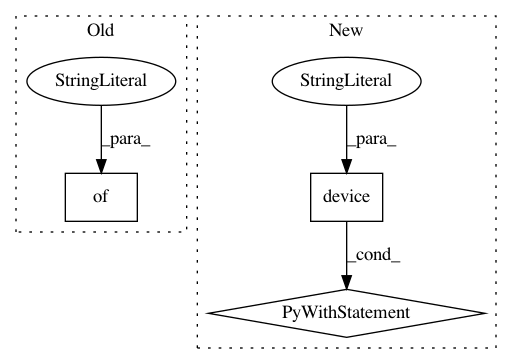

560f16bc5eb29fb2c2fff3a0e3db95a282d1002b,tools/test_encoder_decoder.py,,test_net_batch,#Any#Any#Any#Any#,104
Before Change
saver = tf.train.Saver()
// Set sess configuration
sess_config = tf.ConfigProto(device_count={"GPU": 1})
sess_config.gpu_options.per_process_gpu_memory_fraction = CFG.TEST.GPU_MEMORY_FRACTION
sess_config.gpu_options.allow_growth = CFG.TRAIN.TF_ALLOW_GROWTH
sess_config.gpu_options.allocator_type = "BFC"
After Change
image_path_list = glob.glob("{:s}/**/*.jpg".format(src_image_dir), recursive=True)
with tf.device("/gpu:1"):
input_tensor = tf.placeholder(dtype=tf.float32, shape=[1, 512, 1024, 3], name="input_tensor")
phase_tensor = tf.constant("train", dtype=tf.string)
net = semantic_segmentation.SemanticSeg(net_flag=net_flag, phase=phase_tensor)
with tf.variable_scope("kitti_loss"):
net_out = net.build_model(input_tensor=input_tensor, name="inference")
out_logits = tf.nn.softmax(net_out["logits"])
out = tf.argmax(out_logits, axis=-1)
out = tf.squeeze(input=out, axis=0)
saver = tf.train.Saver()
// Set sess configuration
sess_config = tf.ConfigProto(allow_soft_placemeat=True)
In pattern: SUPERPATTERN
Frequency: 3
Non-data size: 3
Instances
Project Name: MaybeShewill-CV/lanenet-lane-detection
Commit Name: 560f16bc5eb29fb2c2fff3a0e3db95a282d1002b
Time: 2018-10-23
Author: luoyao@baidu.com
File Name: tools/test_encoder_decoder.py
Class Name:
Method Name: test_net_batch
Project Name: MaybeShewill-CV/lanenet-lane-detection
Commit Name: 560f16bc5eb29fb2c2fff3a0e3db95a282d1002b
Time: 2018-10-23
Author: luoyao@baidu.com
File Name: tools/test_encoder_decoder.py
Class Name:
Method Name: test_net
Project Name: tensorflow/cleverhans
Commit Name: 659ce5ec79badf4d14ca4954118492627da62e39
Time: 2017-11-10
Author: fartash.faghri@gmail.com
File Name: examples/multigpu_advtrain/attacks_multigpu.py
Class Name: MadryEtAlMultiGPU
Method Name: generate_np